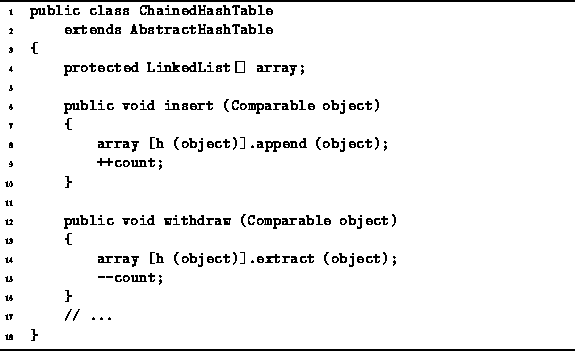
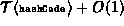
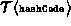

Data Structures and Algorithms
with Object-Oriented Design Patterns in Java
Data Structures and Algorithms
with Object-Oriented Design Patterns in Java
Program  gives the code for
inserting and removing items from a ChainedHashTable.
gives the code for
inserting and removing items from a ChainedHashTable.

Program: ChainedHashTable class insert and withdraw methods.
The implementations of the insert and withdraw methods are remarkably simple. For example, the insert method first calls the hash method h to compute an array index which is used to select one of the linked lists. The append method provided by the LinkedList class is used to add the object to the selected linked list. The total running time for the insert operation is , where  is the running time of the hashCode method. Notice that if the hash method runs in constant time, then so too does hash table insertion operation!
The withdraw method is almost identical to the insert method.
Instead of calling the append,
it calls the linked list extract method to remove the
specified object from the appropriate linked list.
The running time of withdraw is determined by the time
of the extract operation.
In Chapter this was shown to be O(n)
where n is the number of items in the linked list.
In the worst case, all of the items in the ChainedHashTable
have collided with each other and ended up in the same list.
That is, in the worst case if there are n items in the container,
all n of them are in a single linked list.
In this case, the running time of the withdraw operation
is  .
.
 Copyright © 1998 by Bruno R. Preiss, P.Eng. All rights reserved.
Copyright © 1998 by Bruno R. Preiss, P.Eng. All rights reserved.